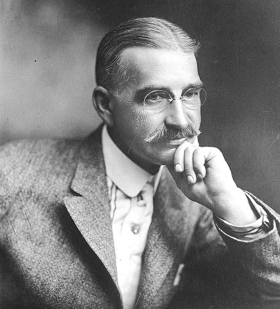

Movie Adaptation: The Wizard of Oz (1939)

The Wizard of Oz is a 1939 American musical fantasy film produced by Metro-Goldwyn-Mayer. An adaptation of L. Frank Baum's 1900 children's fantasy novel The Wonderful Wizard of Oz, the film was primarily directed by Victor Fleming (who left the production to take over the troubled Gone with the Wind), and stars Judy Garland, Frank Morgan, Ray Bolger, Bert Lahr, Jack Haley, Billie Burke and Margaret Hamilton.
Noel Langley, Florence Ryerson, and Edgar Allan Woolf received credit for the screenplay, but others made uncredited contributions. The music was composed by Harold Arlen and adapted by Herbert Stothart, with the lyrics written by Edgar "Yip" Harburg. His works anticipated such later commonplaces as television, augmented reality, laptop computers (The Master Key), wireless telephones (Tik-Tok of Oz), women in high-risk and action-heavy occupations (Mary Louise in the Country), and the ubiquity of clothes advertising (Aunt Jane's Nieces at Work).
L. Frank Baum: More About the Author of The Wonderful Wizard of Oz

Lyman Frank Baum was an American author best known for his children's books, particularly The Wonderful Wizard of Oz and its sequels. He wrote 14 novels in the Oz series, plus 41 other novels, 83 short stories, over 200 poems, and at least 42 scripts
Born in Portsmouth, Dickens left school at the age of 12 to work in a boot-blacking factory when his father was incarcerated in a debtors' prison. After three years he returned to school, before he began his literary career as a journalist. Dickens edited a weekly journal for 20 years, wrote 15 novels, five novellas, hundreds of short stories and non-fiction articles, lectured and performed readings extensively, was an indefatigable letter writer, and campaigned vigorously for children's rights, for education, and for other social reforms.
His works anticipated such later commonplaces as television, augmented reality, laptop computers (The Master Key), wireless telephones (Tik-Tok of Oz), women in high-risk and action-heavy occupations (Mary Louise in the Country), and the ubiquity of clothes advertising (Aunt Jane's Nieces at Work).
Other Famous Books by L. Frank Baum
- American Fairy Tales
- The Fate of a Crown
- The Life and Adventures of Santa Claus
- By the Candelabra's Glare